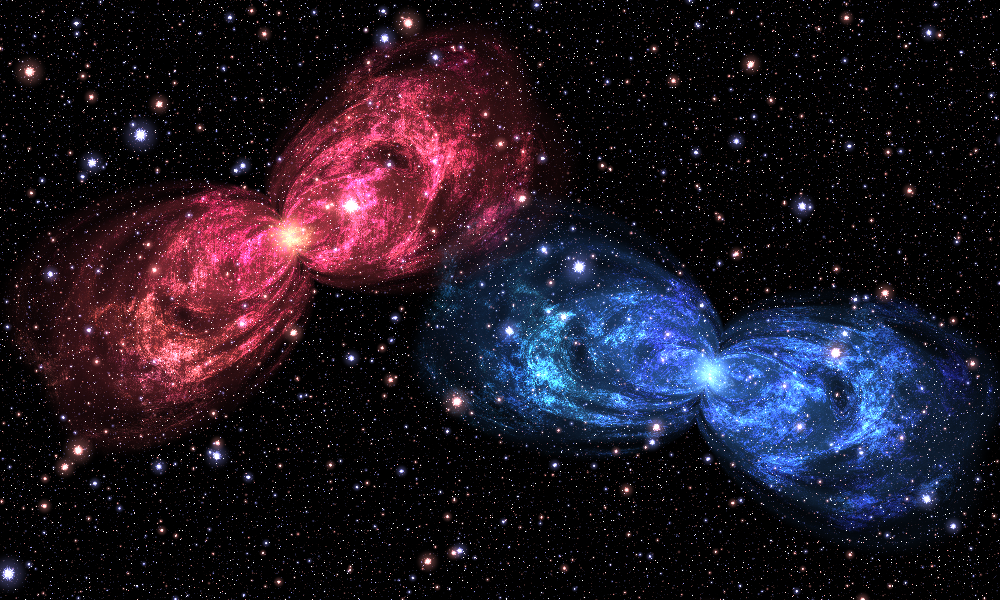
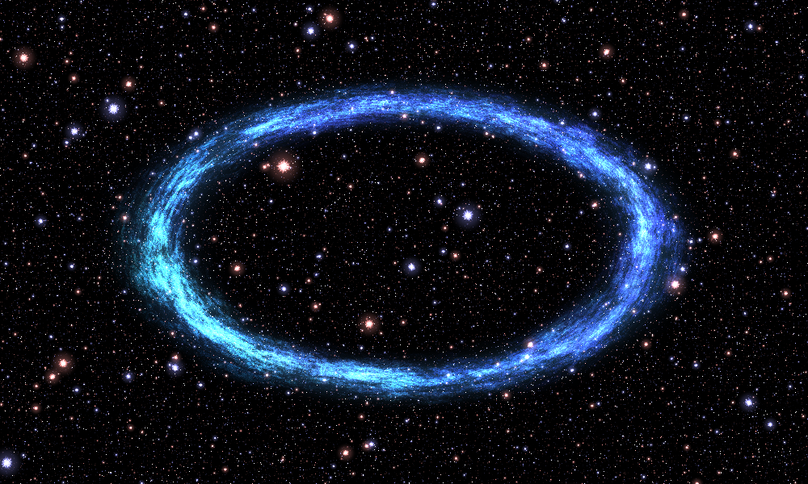

Reuse the parts and create new structures
The renderer samples any function of the form shader(x,y) -> RGB radiance. The nebula is one such function, not a special case hardwired into PNG output.
Run examples from the extracted project root using python -m examples.NAME. Every composition below works on floating-point fields. Keep the display conversion at the end.
1. Reuse the star field by itself
from nebula import build_starfield, render, save_png
save_png(
"output/just_stars.png",
render(build_starfield, width=1000, height=600),
)
It has no dependency on shell geometry or cloud calculations. Configure it separately when necessary:
from nebula import StarConfig, build_starfield, render, save_png
stars = StarConfig(bands=18, frequency_ratio=1.18)
save_png(
"output/fewer_star_bands.png",
render(lambda x, y: build_starfield(x, y, stars), width=1000, height=600),
)
bands counts entire lattices, not individual stars. Removing fine bands changes the density/size distribution. It is not a quality knob that preserves the same field.
2. Change material/color without changing the structure
from dataclasses import replace
from nebula import SceneConfig, evaluate_scene, render, save_png
settings = replace(
SceneConfig(),
gas_tint=(0.35, 1.05, 1.7),
core_color=(1.3, 2.1, 3.5),
star_gain=0.5,
)
save_png(
"output/blue.png",
render(lambda x, y: evaluate_scene(x, y, settings).composite(), width=1000, height=600),
)
The tint multiplies the original RGB cloud detail; it does not replace all the band's colors with one uniform color. A completely new palette can instead replace filament_color or map a scalar measure of cloud_color through your own color function.
A monochrome cloud is straightforward: after evaluate_nebula, take the RGB mean as a scalar field and colorize it. That is deliberately a new material, not a faithful source reconstruction.
3. Place more than one nebula
The complete runnable example is examples/twin_nebulae.py:
python -m examples.twin_nebulae --width 1000 --output output/twins.png

The important assembly is:
left_x, left_y = transform_coordinates(
x, y, center=(-1.0, 0.3), angle=0.35, scale=0.52
)
right_x, right_y = transform_coordinates(
x, y, center=(1.0, -0.35), angle=-0.45, scale=0.52
)
left = evaluate_nebula(left_x, left_y, warm_settings)
right = evaluate_nebula(right_x, right_y, cool_settings)
stars = build_starfield(x, y)
return add_emission(left.gas, left.core, right.gas, right.core, stars)
center is in world coordinates. angle is in radians; positive angles rotate the object counterclockwise. scale>1 enlarges the object. These operations inverse-transform the sampling coordinates, so the procedural detail is regenerated at the new location rather than stretching an existing bitmap.
The star field is generated once in scene coordinates. Calling the full evaluate_scene for each object would also stamp transformed copies of its background stars; that is a different visual effect and often an accidental one.
The example applies intensity gains to avoid saturating the overlap excessively. Additive compositing makes overlapping emission brighter; it does not model one opaque object blocking another.
4. Replace the geometry, retain the cloud shader
The cloud shader needs a texture-coordinate field warp and an emission envelope rim. It does not require circles, lobes, or a particular number of shells. Supply a GeometryFields object to replace the entire original shape generator.
The complete example examples/custom_ring.py builds an elliptical ring:
def ring_geometry(x, y):
radius = np.hypot(x / 1.45, y / 0.82)
residual = radius - 1.0
rim = 0.25 * np.exp(-(residual / 0.12) ** 2)
return GeometryFields(
warp=2.0 * residual,
rim=rim,
coverage=soft_cutoff(20.0 * residual),
)
Then:
ring = evaluate_nebula(x, y, settings, geometry=ring_geometry(x, y))
return add_emission(ring.gas, 0.65 * build_starfield(x, y))

The fields must be finite NumPy arrays with the same shape as the broadcast x,y arrays. In the source, rim usually ranges between 0 and 1/4. Beginning with that scale avoids an unexpectedly overbright result. coverage is only diagnostic, but is still supplied so the interface can be inspected consistently.
The ring example disables core emission. The W-based gas cutout is still present in evaluate_nebula; it is negligible at the ring's radius. To remove or reposition that cutout for a different custom shape, explicitly assemble gas from the returned cloud_color and your envelope rather than using ring.gas.
Useful alternative geometry contracts
A band around a curve can use warp equal to its signed residual and rim equal to a narrow Gaussian around zero. A set of arcs can multiply that rim by angular windows. A spiral can use a wrapped angle/radius relation as its residual, with care at the angular branch cut. A soft filled shape can supply a broad mask rather than a hollow rim.
These suggestions describe new procedural designs. shell_residual and ellipse residuals are not generally true Euclidean distances, so a constant residual width need not produce constant visual thickness everywhere.
5. Reuse a single shell as a simpler motif
import numpy as np
from nebula import shell_residual, render, save_png
from nebula.composition import colorize
def shader(x, y):
residual = shell_residual(x, y, index=12)
# exp(-infinity) = 0 on the explicitly extended singular contour.
rim = np.exp(-(residual / 0.035) ** 2)
return colorize(rim, (1.0, 0.4, 0.8))
save_png("output/one_shell.png", render(shader, width=1000, height=600))
This isolates geometry from the expensive cloud machinery and is a useful way to understand pinch_power, shears, and shell size. The original scene uses ordered combinations of 27 such residuals; this example draws just one.
6. Practical artistic controls
| Setting | What it changes | Caveat |
|---|---|---|
shells.pinch_power |
Narrowing around the shell's longitudinal zero line | Lowering it toward zero removes the characteristic pinch |
shells.cross_scale |
Width of the transverse coordinate before the residual | Larger values generally make the lobes narrower |
shells.radius_step |
Shell-size progression | Also changes how the shells intersect and overlap |
shells.shear, shear_wobble |
Overall and shell-varying slant/deformation | Separate from a rigid whole-object rotation |
shells.count |
Number of candidate shells | Late shells also have the source's fade_center/fade_rate attenuation |
texture.turbulence_bands |
Number of modulation scales | Alters E, which affects both gas and core boundary |
texture.filament_bands |
Number of cloud-detail scales | Also removes those bands' color contributions |
stars.bands |
Number of star lattices | Not a star count |
gas_gain, core_gain, star_gain |
Relative strength of visible layers | Large values saturate after final conversion |
gas_tint, star_tint, core_color |
Layer-specific RGB weights | Tinting and replacing the intrinsic palette are different operations |
Use dataclasses.replace to change immutable settings, including nested settings:
from dataclasses import replace
from nebula import SceneConfig
base = SceneConfig()
new_shells = replace(base.shells, pinch_power=0.18, cross_scale=1.4)
wide = replace(base, shells=new_shells)
7. Export fields for another pipeline
python -m nebula atlas --output-dir output/atlas --width 1000 --save-fields
import numpy as np
from nebula import save_png, to_rgb8
with np.load("output/atlas/fields.npz") as fields:
gas = fields["gas"]
stars = fields["stars"]
altered = 0.7 * gas * (0.5, 1.0, 1.5) + 0.8 * stars
save_png("output/recolored.png", to_rgb8(altered))
The NPZ contains raw float64 fields. The diagnostic PNGs are normalized for human inspection and are not interchangeable with those arrays. Cached fields allow fast recoloring and layer assembly at the cached resolution. Changes to geometry or spatial texture parameters require recomputing the relevant fields.
8. Porting and extension boundaries
The numerical modules are pointwise array operations with finite loops and no I/O. They can be translated to another array backend or a fragment/compute shader. Preserve the coordinate convention, radians, double-exponential gates, ordered prefix weights, and phase grouping first; optimize after checking images and intermediate fields.
A float32 GPU port may show different fine detail because the highest-frequency trigonometric phases amplify coordinate rounding. Reducing band counts, using fast approximations to trigonometric functions, or replacing acos(cos(t)) with a modulo-based triangle wave are explicit numerical/artistic changes, not automatically pixel-preserving refactors.
This package provides 2-D scalar/RGB fields, not a volumetric nebula or an interactively rotatable 3-D object. A three-dimensional version would require a new spatial model. Simply interpreting L_s as a distance field for sphere tracing would be incorrect.